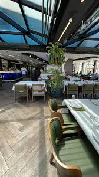

Bahri Restaurant is one of the finest and best restaurants in Ramallah. The restaurant specializes in preparing the most delicious fresh seafood. The menu includes many types of fish and delicious seafood. The most prominent dishes served are grilled salmon steak, crispy shrimp, grilled sea bream, and a mixed seafood platter that includes calamari, mussels, shrimp, and squid. What distinguishes the restaurant most is that it offers many delicious salads and distinctive appetizers that accompany all meals, such as seafood soup, tabbouleh, hummus, tuna salad, and corn salad. It also offers shisha in various types and flavors. The restaurant is distinguished by its elegant and luxurious seating and large dining hall that is suitable for families and groups.
